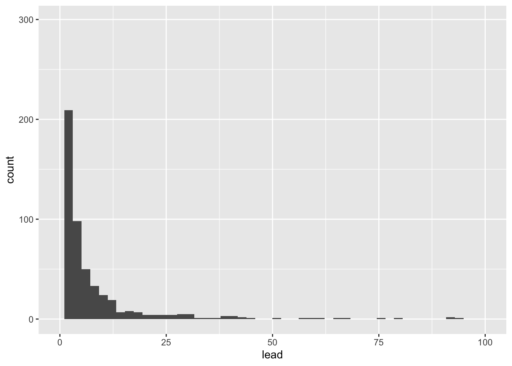

library(tidyverse)Intro statistics and plotting
STA 199
Bulletin
- Office hours
- Join GitHub organization if you haven’t already
- This
aeis not due for a grade, but when drop/add ends, aes will be graded for completion. You turn in youraesby committing to GitHub.
Getting started
Clone your ae2-username repo from the GitHub organization. If you don’t have an ae2-username repo, you have not yet accepted your course org invite. You can still clone the public repo but note that you won’t be able to push.
Last time
Define package, data frame, variable and observation
What’s a function? What’s an argument?
glimpse(data)mean(x)library(tidyverse)
- How do you print to the screen?
Today
By the end of today you will…
- practice using
glimpse(),names(),nrow(),ncol(),distinct(),count() - define and give examples of statistics
- make visualizations with ggplot
“The simple graph has brought more information to the data analyst's mind than any other device"
- John Tukey
Load packages
A package within a package…
- The
tidyversepackage is a collection of packages.ggplot2anddplyrare two packages contained withintidyverse.ggplot2contains functions for plotting data whiledplyrcontains tools to wrangle, manipulate and summarize data frames.
Load data
The data are stored as a CSV (comma separated values) file in the data folder of your repository. Let’s read it from there and save it as an object called flint.
flint = read_csv("data/flint.csv")Data dictionary
id: sample ID number (identifies the home)zip: ZIP code in Flint of the sample’s locationward: ward in Flint of the sample’s locationdraw: which time point the water was sampled fromlead: lead content in parts per billion
Get to know the data
Exercise 1:
Look at the data, how many observations are there? How many variables?
[answer here]
distinct() and count()
Let’s use distinct to find the number of different time points water was sampled.
distinct(flint, draw)# A tibble: 3 × 1
draw
<chr>
1 first
2 second
3 third How many unique homes are in the data set?
flint |>
distinct(id)# A tibble: 269 × 1
id
<dbl>
1 1
2 2
3 4
4 5
5 6
6 7
7 8
8 9
9 12
10 13
# … with 259 more rows- A note on pipes
|>and%>%.
Exercise 2
Fill in the code to count how many samples were taken from each zip code. Un-comment the lines (i.e. remove the # before running the code)
# flint |>
# count(______)Which ZIP code had the most samples drawn?
Goal
We want to learn about the population using a sample.
In the case we want to learn about the lead content in all of Flint, MI homes but we only have available water readings from a sample of homes (our data set).
Statistics
What is a statistic? It’s any mathematical function of the data. Sometimes, a statistic is referred to as “sample statistic” since you compute it from a sample (the data) and not the entire population.
measure of central tendency:
- mean
- median
- mode
order statistics:
- quantiles
- minimum (0 percentile)
- median (50th percentile)
- maximum (100 percentile)
measures of spread:
- variance
- standard deviation
- range
- quartiles
- inter-quartile range (IQR)
… and any other arbitrary function of the data you can come up with!
Exercise 3:
Come up with your own statistic and write it in the narrative here.
To access a column of the data, we’ll use data$column.
Let’s compute some of these statistics for lead ppb in R.
# code hereIntro to plotting
Let’s take a look at the distribution of lead content in homes in Flint, MI by building a plot, layer by layer.
ggplot() creates the initial base coordinate system, and we will add layers to that base. We first specify the data set we will use with data = flint.
ggplot(data = flint)
The mapping argument is paired with an aesthetic (aes()), which tells us how the variables in our data set should be mapped to the visual properties of the graph.
ggplot(data = flint,
mapping = aes(x = lead)) # variable(s) we want to look at
We often omit the names of the first two arguments in R functions. So you’ll often see this written as:
ggplot(flint,
aes(x = lead))
The geom_xx function specifies the type of plot we want to use to represent the data. In the code below, we use geom_histogram which creates a plot where each observation is represented by a point.
ggplot(flint,
aes(x = lead)) +
geom_histogram()`stat_bin()` using `bins = 30`. Pick better value with `binwidth`.
We can make this plot look nicer by adjusting the number of bins and/or the x-axis.
flint |> # data
ggplot(aes(x = lead)) + # columns we want to look at
geom_histogram(bins = 50) + # geometry of the visualization
xlim(0, 100) # limit the x-axis to a certain range
Let’s visualize some of our summary statistics on the plot.
Exercise 4:
Un-comment the code below and fill in the blank with the mean.
flint |>
ggplot(aes(x = lead)) +
geom_histogram(bins = 50) +
xlim(0,100) #+
#geom_vline(xintercept = __, color = "red")Add another geom_vline with the median. Use a separate color.
Describing distributions
To describe a distribution we will use the terms below.
- shape
- skewness: right-skewed, left-skewed, symmetric
- modality: unimodal, bimodal, multimodal, uniform
- center: mean (mean), median (median)
- spread: range (range), standard deviation (sd), interquartile range (IQR)
- outliers: observations outside the pattern of the data
Box plots
Let’s make some plots, where we will focus on zip codes 48503, 48504, 48505, 48506, and 48507. We will restrict our attention to samples with lead values less than 1,000 ppb.
flint_focus <- flint |>
filter(zip %in% 48503:48507, lead < 1000)Below are side-by-side box plots for the three flushing times in each of the five zip codes we considered. Add x and y labels; add a title by inserting title = "title_name" inside the labs() function.
ggplot(data = flint_focus, aes(x = factor(zip), y = lead)) +
geom_boxplot(aes(fill = factor(draw))) +
labs(x = "--------", y = "--------", fill = "Flushing time") +
scale_fill_discrete(breaks = c("first", "second", "third"),
labels = c("0 (sec)", "45 (sec)", "120 (sec)")) +
coord_flip() +
theme_bw()Add labels for x, y, a title, and subtitle to the code below to update the corresponding plot.
ggplot(data = flint_focus, aes(x = factor(zip), y = lead)) +
geom_boxplot(aes(fill = factor(draw))) +
labs(x = "--------", y = "--------", fill = "Flushing time",
subtitle = "--------") +
scale_fill_discrete(breaks = c("first", "second", "third"),
labels = c("0 (sec)", "45 (sec)", "120 (sec)")) +
coord_flip(ylim = c(0, 50)) +
theme_bw()
What is the difference between the two plots? What are the advantages and disadvantages to each plot?
References
Langkjaer-Bain, R. (2017). The murky tale of Flint’s deceptive water data. Significance, 14: 16-21.
Kelsey J. Pieper, Rebekah Martin, Min Tang, LeeAnne Walters, Jeffrey Parks, Siddhartha Roy, Christina Devine, and Marc A. Edwards Environmental Science & Technology 2018 52 (15), 8124-8132 DOI: 10.1021/acs.est.8b00791